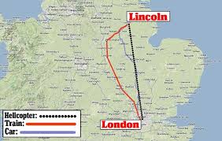

About Lincoln
Lincoln is a cathedral city and the county town of Lincolnshire within the East Midlands of England. The City of Lincoln is the home for the University of Lincoln and the Lincoln Cathedral.
Lincoln developed from the Roman town of Lincoln Colonia which developed from an Iron Age settlement.
Lincoln's major landmarks are Lincoln Cathedral, a fine example of English Gothic architecture and Lincoln Castle, an 11th-century Normal Castle.
| Area: | 35.69km2 |
|---|---|
| Population: | 94,600 (as of 2012) |
| Weather: | 15℃. Wind SW at 9mph (14km/h) 74% Humidity |
| Airport No. | 1 |
| County | Lincolnshire |
University of Lincoln
The University start life as the University of Lincolnshire and Humberside in 1996, when the University of Humbesrside opened a Lincoln campus next to Brayford Pool, attracting additional students to the city. Lincoln School of Art & Design (which was Lincolnshire's main outlet for higher education) and Riseholme Agricultural College, which had previously been part of De Monfort University on Leicester, were absorbed inthe th University of Lincoln in 2001, and subsequently the Linoln campus took priority over the Hull Campus.
Most buildings were built after 2001. The University changed its name to the University of Lincoln in September 2002. In the 2005-05 academic year, 8,292 full-time undergraduates were studying at the university and by 2010-11, 11,900 studens were registered as studying there.
Location 
Lincoln is located within the East Midlands of England. The city is situated in a gap in the Lincoln Cliff 141 miles (227 kilometres) north of London, at an elevation of 20.4 metres (66.9 feet) above sea level by the River Witham, stretching up to 75 metres (246.1 feet) above sea level in the uphill area around the cathedral.